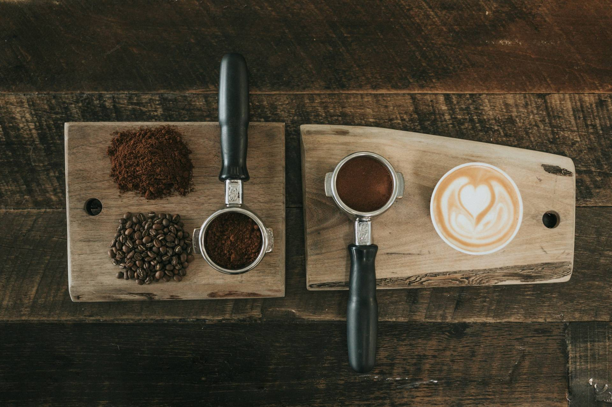

Proyectos
Próximamente
Nuevo proyecto
Estoy preparando más diseños para este portfolio. Vuelve pronto.
Aquí encontrarás proyectos de diseño y desarrollo web. Trabajo con las últimas herramientas de IA, siempre con una mirada y un criterio propios.

Próximamente
Estoy preparando más diseños para este portfolio. Vuelve pronto.